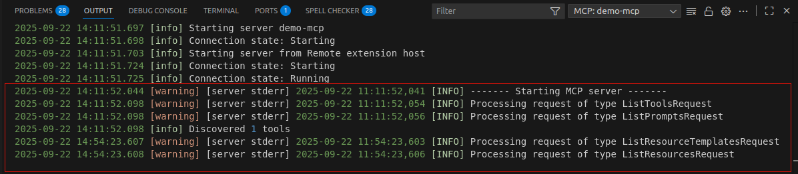
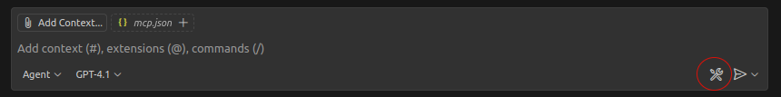
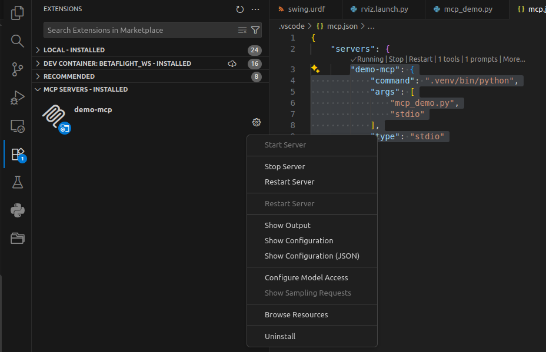
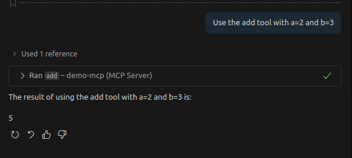

VSCode MCP Server
MCP (Model Context Protocol) is an open-source standard for connecting AI applications to external systems.
MCP Concept
- Resources: File-like data that can be read by clients (like API responses or file contents)
- Tools: Functions that can be called by the LLM (with user approval)
- Prompts: Pre-written templates that help users accomplish specific tasks
Simple MCP Server demo
using python mcp library
uv
Must of the example use uv the new package installer and runner
I still use pip and the old virtual environment
using logging
Using logging and not print
Logging
The logging from the mcp server mark is warning and from [server stderr] as source , is ok and not an error the mcp output to stderr we can show from the image below that the rest of the logging line describe to output from our mcp server

Install
Very simple server
Register the server in vscode
From mcp.json file we can manage the server: start, stop, show output(log) and more
| mcp.json | |
|---|---|
The tools relevant only from agent mode and can config using the tool icon

Manage
From vscode extensions tab

Usage from copilot
@mcp.tool()
- Purpose: Expose a Python function as a structured action the client (Copilot Chat, Cursor, Windsurf, etc.) can call.
- Input/Output: JSON-serializable arguments and return values.
- Use case: Do something deterministic (math, file ops, API calls).
permission
| agent mode | |
|---|---|

@mcp.prompt()
- Purpose: Expose a prompt template (reusable instruction).
- Input: Arguments you want to inject into the prompt string.
- Output: A text template that will be fed to the AI.
- Use case: Style instructions, boilerplate phrasing, workflows.
@mcp.resource()
- Purpose: Expose structured data sources the client can browse/fetch.
- Input: Usually a URI-like parameter (you define the pattern).
- Output: String or JSON content.
- Use case: Provide documents, snippets, templates, or data.